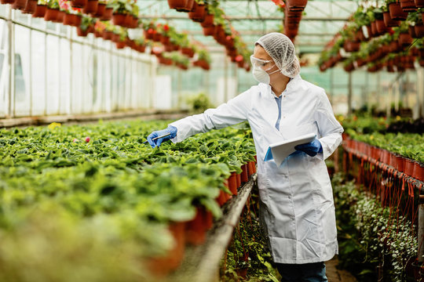
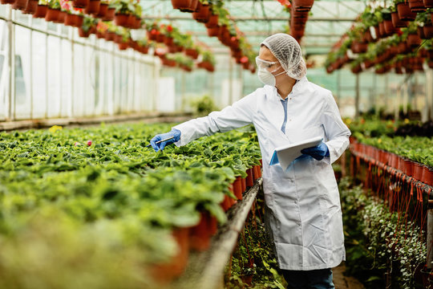

Overview
The Faculty of Agriculture & Environmental Studies equips students with knowledge and skills in sustainable farming, environmental management, and agricultural innovation to meet global food and climate challenges.
Our programs combine theoretical learning with hands-on practical experiences, giving students the opportunity to work in experimental farms, laboratories, and field research projects. We emphasize interdisciplinary approaches, integrating agronomy, environmental science, and animal husbandry, ensuring graduates are versatile and industry-ready.
The faculty also fosters strong global connections, enabling students to participate in exchange programs, international research collaborations, and conferences. Our aim is to produce environmentally conscious leaders and innovators who can address the challenges of food security, climate change, and sustainable development worldwide.
Departments
- Department of Agronomy
- Department of Environmental Science
- Department of Animal Science
- Department of Horticulture
- Department of Agricultural Economics
Programs
Undergraduate Programs
- BSc in Agriculture
- BSc in Environmental Science
- BSc in Animal Science
Postgraduate Programs
- MSc in Crop Science
- MSc in Soil & Water Management
- MSc in Environmental Management
Research
Our faculty drives research in sustainable farming techniques, climate change adaptation, soil fertility, biodiversity conservation, and renewable agricultural technology.
Facilities
- Experimental Farms
- Greenhouses & Plant Labs
- Soil & Water Testing Labs
- Environmental Monitoring Centers
Global Outlook
We collaborate with agricultural universities and research centers worldwide to promote food security, sustainable farming, and climate resilience initiatives.
Contact
Email: agriculture@teu.edu.com
Website: www.teu.edu.com/agriculture